자동차정비산업기사 (2020-08-22 기출문제)
1과목: 일반기계공학
1. 주철의 특징으로 틀린 것은?
- 주조성이 양호하다.
- 기계가공이 어렵다.
- 내마멸성이 우수하다.
- 압축강도가 크다.
(정답률: 74%)

2. 마찰차의 종류가 아닌 것은?
- 원통 마찰차
- 에반스식 마찰차
- 트리플식 마찰차
- 원뿔 마찰차
(정답률: 53%)
3. 외부로부터 힘을 받지 않아도 물체가 진동을 일으키는 것은?
- 고유진동
- 공진
- 좌굴
- 극관성 모멘트
(정답률: 76%)
4. 단동 피스톤 펌프에서 실린더 직경 20cm, 행정 20cm, 회전수 80rpm, 체적효율 90% 이면 토출유량(m3/min)은?
- 0.261
- 0.271
- 0.452
- 0.502
(정답률: 40%)
5. 비틀림 모멘트 T(kgf·cm), 회전수 N(rpm), 전달마력 H(kW)일 때 비틀림 모멘트를 구하는 식은?
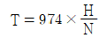
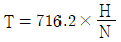
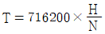
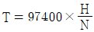
(정답률: 48%)
6. 줄(file) 작업에서 줄눈의 크기에 의한 분류가 아닌 것은?
- 중목
- 단목
- 세목
- 황목
(정답률: 49%)
7. 재료가 반복하중을 받는 경우 안전율을 구하는식은?
- 허용응력/크리프한도
- 피로한도/허용응력
- 허용응력/최대응력
- 최대응력/허용응력
(정답률: 57%)
8. 축 방향의 압축력이나 인장력을 받을 때 사용하거나 2개의 축을 연결하는 것은?
- 키(key)
- 코터(cotter)
- 핀(pin)
- 리벳(rivet)
(정답률: 62%)
9. 원심펌프에서 양정이 20m, 송출량은 3m3/min일 때, 축동력 1000kW를 필요로 하는 펌프의 효율(%)은? (단, 유체의 비중량은 920N/m3이다.)
- 65
- 75
- 82
- 92
(정답률: 29%)
10. 금속의 소성가공에서 열간가공과 냉간가공을 구분하는 기준은?
- 변태 온도
- 재결정 온도
- 불림 온도
- 담금질 온도
(정답률: 68%)
11. 재료단면에 대한 단면2차모멘트를 I, 단면1차모멘트를 Q, 전단력을 F, 폭을 B 라 할 때 임의의 위치에서의 수평전단응력을 구하는 식은?
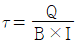
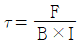
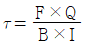
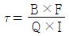
(정답률: 56%)
12. 주물형상이 크고 소량의 주조품을 요구할 때 사용하며 중요부분의 골격만을 만드는 목형은?
- 코어형
- 부분형
- 매치 플레이트형
- 골격형
(정답률: 69%)
13. 식물 탄닌-태닝 처리한 가죽에 대한 설명으로 틀린 것은?
- 부드러운 가죽을 얻을 수 있다.
- 단단하고 쉽게 펴지지 않는다.
- 색상은 주로 다갈색이다.
- 공업용으로 많이 이용된다.
(정답률: 60%)
14. 비중 약 2.7에 가볍고 전연성이 우수하며 전기 및 열의 양도체로 내식성이 우수한 것은?
- 구리
- 망간
- 니켈
- 알루미늄
(정답률: 66%)
15. 어느 위치에서나 유입 질량과 유출 질량이 같으므로 일정한 관내에 축적된 질량은 유속에 관계없이 일정하다는 원리는?
- 연속의 원리
- 파스칼의 원리
- 베르누이의 원리
- 아르키메데스의 원리
(정답률: 46%)
16. 체결용 기계요소인 코터의 전단응력을 구하는 식은? (단, W : 인장하중(kgf), b : 코터의 너비(mm), h : 코터의 높이(mm), d : 코터의 직경(mm)이다.)
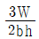
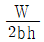
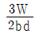
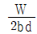
(정답률: 42%)
17. 양단지지 겹판 스프링에서 처짐을 구하는 식은? (단, W : 하중, n : 판수, h : 판 두께, b : 판의 폭, E : 세로탄성계수, l : 스팬이다.)
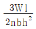
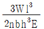
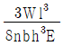
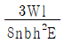
(정답률: 47%)
18. 다음 중 축의 강도를 가장 약화시키는 키(key)는?
- 성크 키
- 새들 키
- 플랫 키
- 원뿔 키
(정답률: 52%)
19. 선반작업 시 지름 60mm의 환봉을 절삭하는데 필요한 회전수(rpm)는? (단, 절삭속도는 50m/min이다.)
- 1065
- 830
- 530
- 265
(정답률: 33%)
20. 피복아크 용접에서 용입 불량의 원인으로 틀린 것은?
- 용접 속도가 느릴 때
- 용접 전류가 약할 때
- 용접봉 선택이 불량할 때
- 이음 설계에 결함이 있을 때
(정답률: 57%)
2과목: 자동차엔진
21. 디젤엔진에서 경유의 착화성과 관련하여 세탄 60cc, α-메틸나프탈린 40cc를 혼합하면 세탄가(%)는?
- 70
- 60
- 50
- 40
(정답률: 65%)
22. 엔진이 과냉 되었을 때의 영향이 아닌 것은?
- 연료의 응결로 연소가 불량
- 연료가 쉽게 기화하지 못함
- 조기 점화 또는 노크가 발생
- 엔진 오일의 점도가 높아져 시동할 때 회전 저항이 커짐
(정답률: 63%)
23. 디젤기관에서 착화지연기간이 1/1000초, 착화 후 최고 압력에 도달할 때까지의 시간이 1/1000초일 때, 2000rpm으로 운전되는 기관의 착화 시기는? (단, 최고 폭발압력은 상사점 후 12°이다.)
- 상사점 전 32°
- 상사점 전 36°
- 상사점 전 12°
- 상사점 전 24°
(정답률: 57%)
24. 전자제어 가솔린엔진에서 기본적인 연료분사시기와 점화시기를 결정하는 주요 센서는?
- 크랭크축 위치센서(Crankshaft Position Sensor)
- 냉각 수온 센서(Water Temperature Sensor)
- 공전 스위치 센서(Idle Switch Sensor)
- 산소 센서(O2 Sensor)
(정답률: 70%)
25. 운행차 배출가스 정기검사 및 정밀검사의 검사항목으로 틀린 것은?
- 휘발유 자동차 운행차 배출가스 정기검사 : 일산화탄소, 탄화수소, 공기과잉률
- 휘발유 자동차 운행차 배출가스 정밀검사 : 일산화탄소, 탄화수소, 질소산화물
- 경유 자동차 운행차 배출가스 정기검사 : 매연
- 경유 자동차 운행차 배출가스 정밀검사 : 매연, 엔진최대출력검사, 공기과잉률
(정답률: 53%)
26. 일반적으로 자동차용 크랭크축 재질로 사용하지 않는 것은?
- 마그네슘 - 구리강
- 크롬 - 몰리브덴강
- 니켈 - 크롬강
- 고탄소강
(정답률: 61%)
27. 밸브 오버랩에 대한 설명으로 틀린 것은?
- 흡ㆍ배기 밸브가 동시에 열려 있는 상태이다.
- 공회전 운전 영역에서는 밸브 오버랩을 최소화 한다.
- 밸브 오버랩을 통한 내부 EGR 제어가 가능하다.
- 밸브 오버랩은 상사점과 하사점 부근에서 발생한다.
(정답률: 52%)
28. 냉각계통의 수온 조절기에 대한 설명으로 틀린 것은?
- 펠릿형은 냉각수 온도가 60℃ 이하에서 최대로 열려 냉각수 순환을 잘되게 한다.
- 수온 조절기는 엔진의 온도를 알맞게 유지한다.
- 펠릿형은 왁스와 합성고무를 봉입한 형식이다.
- 수온 조절기는 벨로즈형과 펠릿형이 있다.
(정답률: 65%)
29. 커먼레일 디젤엔진의 솔레노이드 인젝터 열림(분사 개시)에 대한 설명으로 틀린 것은?
- 솔레노이드 코일에 전류를 지속적으로 가한 상태이다.
- 공급된 연료는 계속 인젝터 내부로 유입된다.
- 노즐 니들을 위에서 누르는 압력은 점차 낮아진다.
- 인젝터 아랫부분의 제어 플런저가 내려가면서 분사가 개시된다.
(정답률: 42%)
30. LPG 연료의 장점에 대한 설명으로 틀린 것은?
- 대기 오염이 적고 위생적이다.
- 노킹이 일어나지 않아 기관이 정숙하다.
- 퍼컬레이션으로 인해 연소 효율이 증가한다.
- 기관 오일을 더럽히지 않으며 기관의 수명이 길다.
(정답률: 62%)
31. 전자제어 연료분사장치에서 제어방식에 의한 분류 중 흡기압력 검출방식을 의미하는 것은?
- K - Jetronic
- L - Jetronic
- D - Jetronic
- Mono - Jetronic
(정답률: 57%)
32. 내연기관의 열손실을 측정한 결과 냉각수에 의한 손실이 30%, 배기 및 복사에 의한 손실이 30%였다. 기계 효율이 85%라면 정미 열효율(%)은?
- 28
- 30
- 32
- 34
(정답률: 39%)
33. 전자제어 가솔린 엔진에서 흡입 공기량 계측 방식으로 틀린 것은?
- 베인식
- 열막식
- 칼만 와류식
- 피드백 제어식
(정답률: 60%)
34. 다음 중 전자제어엔진에서 스로틀 포지션 센서와 기본 구조 및 출력 특성이 가장 유사한 것은?
- 크랭크 각 센서
- 모터 포지션 센서
- 액셀러레이터 포지션 센서
- 흡입 다기관 절대 압력 센서
(정답률: 61%)
35. 기관의 점화순서가 1-6-2-5-8-3-7-4인 8기통 기관에서 5번 기통이 압축 초에 있을 때 8번 기통은 무슨 행정과 가장 가까운가?
- 폭발 초
- 흡입 중
- 배기 말
- 압축 중
(정답률: 48%)
36. 자동차관리법상 저속전기자동차의 최고속도(km/h) 기준은? (단, 차량 총중량이 1361kg을 초과하지 않는다.)
- 20
- 40
- 60
- 80
(정답률: 54%)
37. 연료 여과기의 오버플로 밸브의 역할로 틀린 것은?
- 공급 펌프의 소음 발생을 억제한다.
- 운전 중 연료에 공기를 투입한다.
- 분사펌프의 엘리먼트 각 부분을 보호한다.
- 공급 펌프와 분사 펌프 내의 연료 균형을 유지한다.
(정답률: 60%)
38. 윤활장치에서 오일 여과기의 여과방식이 아닌 것은?
- 비산식
- 전류식
- 분류식
- 샨트식
(정답률: 47%)
39. 가솔린 연료 200cc를 완전 연소시키기 위한 공기량(kg)은 약 얼마인가? (단, 공기와 연료의 혼합비는 15:1, 가솔린의 비중은 0.73이다.)
- 2.19
- 5.19
- 8.19
- 11.19
(정답률: 43%)
40. 전자제어 가솔린 엔진에서 연료분사장치의 특징으로 틀린 것은?
- 응답성 향상
- 냉간 시동성 저하
- 연료소비율 향상
- 유해 배출가스 감소
(정답률: 65%)
3과목: 자동차섀시
41. 제동 시 슬립률(λ)을 구하는 공식은? (단, 자동차의 주행 속도는 V, 바퀴의 회전 속도는 Vw이다.)
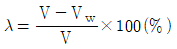
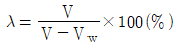
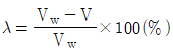
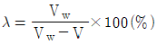
(정답률: 56%)
42. 브레이크장치의 프로포셔닝 밸브에 대한 설명으로 옳은 것은?
- 바퀴의 회전속도에 따라 제동시간을 조절한다.
- 바깥 바퀴의 제동력을 높여서 코너링 포스를 줄인다.
- 급제동 시 앞바퀴보다 뒷바퀴가 먼저 제동되는 것을 방지한다.
- 선회 시 조향 안정성 확보를 위해 앞바퀴의 제동력을 높여준다.
(정답률: 59%)
43. ABS 컨트롤 유닛(제어모듈)에 대한 설명으로 틀린 것은?
- 휠의 회전속도 및 가·감속을 계산한다.
- 각 바퀴의 속도를 비교·분석한다.
- 미끄럼 비를 계산하여 ABS 작동 여부를 결정한다.
- 컨트롤 유닛이 작동하지 않으면 브레이크가 전혀 작동하지 않는다.
(정답률: 73%)
44. 클러치의 구성부품 중 릴리스 베어링(Release bearing)의 종류에 해당하지 않는 것은?
- 카본형
- 볼 베어링형
- 니들 베어링형
- 앵귤러 접촉형
(정답률: 44%)
45. 오버 드라이브(Over Drive) 장치에 대한 설명으로 틀린 것은?
- 기관의 수명이 향상되고 운전이 정숙하게 되어 승차감도 향상된다.
- 속도가 증가하기 때문에 윤활유의 소비가 많고 연료 소비가 증가한다.
- 기관의 여유출력을 이용하였기 때문에 기관의 회전속도를 약 30% 정도 낮추어도 그 주행속도를 유지할 수 있다.
- 자동변속기에서도 오버 드라이브가 있어 운전자의 의지(주행속도, TPS 개도량)에 따라 그 기능을 발휘하게 된다.
(정답률: 59%)
46. 기관의 최대토크 20kgf·m, 변속기의 제1변속비 3.5, 종감속비 5.2, 구동바퀴의 유효반지름이 0.35m일 때 자동차의 구동력(kgf)은? (단, 엔진과 구동바퀴 사이의 동력전달효율은 0.45이다.)
- 468
- 368
- 328
- 268
(정답률: 25%)
47. 자동차 제동장치가 갖추어야 할 조건으로 틀린 것은?
- 최고속도의 차량의 중량에 대하여 항상 충분히 제동력을 발휘할 것
- 신뢰성과 내구성이 우수할 것
- 조작이 간단하고 운전자에게 피로감을 주지 않을 것
- 고속주행 상태에서 급제동 시 모든 바퀴에 제동력이 동일하게 작용할 것
(정답률: 67%)
48. 전동식 동력조향장치의 입력 요소 중 조향핸들의 조작력 제어를 위한 신호가 아닌 것은?
- 토크 센서 신호
- 차속 센서 신호
- G 센서 신호
- 조향 각 센서 신호
(정답률: 49%)
49. 다음 중 구동륜의 동적 휠 밸런스가 맞지 않을 경우 나타나는 현상은?
- 피칭 현상
- 시미 현상
- 캐치 업 현상
- 링클링 현상
(정답률: 66%)
50. 다음 중 댐퍼 클러치 제어와 가장 관련이 없는 것은?
- 스로틀 포지션 센서
- 에어컨 릴레이 스위치
- 오일 온도 센서
- 노크 센서
(정답률: 35%)
51. 전자제어 동력 조향장치에서 다음 주행 조건 중 운전자에 의한 조향 휠의 조작력이 가장 작은 것은?
- 40km/h 주행 시
- 80km/h 주행 시
- 120km/h 주행 시
- 160km/h 주행 시
(정답률: 53%)
52. 무단변속기(CVT)의 구동 풀리와 피동 풀리에 대한 설명으로 옳은 것은?
- 구동 풀리 반지름이 크고 피동 풀리의 반지름이 작을 경우 증속된다.
- 구동 풀리 반지름이 작고 피동 풀리의 반지름이 클 경우 증속된다.
- 구동 풀리 반지름이 크고 피동 풀리의 반지름이 작을 경우 역전 감속된다.
- 구동 풀리 반지름이 작고 피동 풀리의 반지름이 클 경우 역전 증속된다.
(정답률: 48%)
53. 전동식 동력 조향장치(Motor Driven Power Steering)시스템에서 정차 중 핸들 무거움 현상의 발생 원인이 아닌 것은?
- MDPS CAN 통신선의 단선
- MDPS 컨트롤 유닛측의 통신 불량
- MDPS 타이어 공기압 과다주입
- MDPS 컨트롤 유닛측 배터리 전원 공급 불량
(정답률: 66%)
54. 기관의 토크가 14.32kgf·m이고, 2500rpm으로 회전하고 있다. 이때 클러치에 의해 전달되는 마력(PS)은? (단, 클러치의 미끄럼은 없는 것으로 가정한다.)
- 40
- 50
- 60
- 70
(정답률: 40%)
55. 전자제어 현가장치에 대한 설명을 틀린 것은?
- 조향 각 센서는 조향 휠의 조향 각도를 감지하여 제어모듈에 신호를 보낸다.
- 일반적으로 차량의 주행상태를 감지하기 위해서는 최소 3점의 G센서가 필요하며 차량의 상·하 움직임을 판단한다.
- 차속 센서는 차량의 주행속도를 감지하며 앤티 다이브, 앤티 롤, 고속안정성 등을 제어할 때 입력신호로 사용된다.
- 스로틀 포지션 센서는 가속페달의 위치를 감지하여 고속 안정성을 제어할 때 입력신호로 사용된다.
(정답률: 41%)
56. 센터 디퍼렌셜 기어 장치가 없는 4WD 차량에서 4륜 구동상태로 선회 시 브레이크가 걸리는 듯한 현상은?
- 타이트 코너 브레이킹
- 코너링 언더 스티어
- 코너링 요 모멘트
- 코너링 포스
(정답률: 61%)
57. 전자제어 현가장치에서 안티 스쿼트(Anti-squat) 제어의 기준신호로 사용되는 것은?
- G 센서 신호
- 프리뷰 센서 신호
- 스로틀 포지션 센서 신호
- 브레이크 스위치 신호
(정답률: 42%)
58. 자동차를 옆에서 보았을 때 킹핀의 중심선이 노면에 수직인 직선에 대하여 어느 한쪽으로 기울어져 있는 상태는?
- 캐스터
- 캠버
- 셋백
- 토인
(정답률: 60%)
59. 구동력이 108kgf인 자동차가 100km/h로 주행하기 위한 엔진의 소요마력(PS)은?
- 20
- 40
- 80
- 100
(정답률: 35%)
60. 공기 브레이크의 주요 구성부품이 아닌 것은?
- 브레이크 밸브
- 레벨링 밸브
- 릴레이 밸브
- 언로더 밸브
(정답률: 48%)
4과목: 자동차전기
61. 자동차 냉방 시스템에서 CCOT(Clutch Cycling Orifice Tube)형식의 오리피스 튜브와 동일한 역할을 수행하는 TXV(Thermal Expansion Valve)형식의 구성부품은?
- 컨덴서
- 팽창 밸브
- 핀센서
- 리시버 드라이어
(정답률: 53%)
62. 차량에서 12V 배터리를 탈거한 후 절연체의 저항을 측정하였더니 1MΩ이라면 누설전류(mA)는?
- 0.006
- 0.008
- 0.010
- 0.012
(정답률: 60%)
63. 자동차에서 저항 플러그 및 고압 케이블을 사용하는 가장 적합한 이유는?
- 배기가스 저감
- 잡음 발생 방지
- 연소 효율 증대
- 강력한 불꽃 발생
(정답률: 50%)
64. 하이브리드 자동차에서 고전압 배터리관리시스템(BMS)의 주요 제어 기능으로 틀린 것은?
- 모터 제어
- 출력 제한
- 냉각 제어
- SOC 제어
(정답률: 36%)
65. 점화 플러그에 대한 설명으로 옳은 것은?
- 에어 갭(간극)이 규정보다 클수록 불꽃 방전 시간이 짧아진다.
- 에어 갭(간극)이 규정보다 작을수록 불꽃 방전 전압이 높아진다.
- 전극의 온도가 낮을수록 조기점화 현상이 발생된다.
- 전극의 온도가 높을수록 카본퇴적 현상이 발생된다.
(정답률: 40%)
66. 메모리 효과가 발생하는 배터리는?
- 납산 배터리
- 니켈 배터리
- 리튬-이온 배터리
- 리튬-폴리머 배터리
(정답률: 39%)
67. 경음기 소음 측정 시 암소음 보정을 하지 않아도 되는 경우는?
- 경음기소음 : 84dB, 암소음 : 75dB
- 경음기소음 : 90dB, 암소음 : 85dB
- 경음기소음 : 100dB, 암소음 : 92dB
- 경음기소음 : 100dB, 암소음 : 85dB
(정답률: 49%)
68. 어린이 운송용 승합자동차에 설치되어 있는 적색 표시등과 황색 표시등의 작동 조건에 대한 설명으로 옳은 것은?
- 정지하려고 할 때는 적색 표시등이 점멸
- 출발하려고 할 때는 적색 표시등이 점멸
- 정차 후 승강구가 열릴 때는 적색 표시등 점멸
- 출발하려고 할 때는 적색 및 황색 표시등이 동시에 점등
(정답률: 53%)
69. 기동 전동기 작동 시 소모전류가 규정치보다 낮은 이유는?
- 압축압력 증가
- 엔진 회전저항 증대
- 점도가 높은 엔진오일 사용
- 정류자와 브러시 접촉저항이 큼
(정답률: 57%)
70. 충전장치의 고장 진단방법으로 틀린 것은?
- 발전기 B단자의 저항을 점검한다.
- 배터리 (+)단자의 접촉 상태를 점검한다.
- 배터리 (-)단자의 접촉 상태를 점검한다.
- 발전기 몸체와 차체의 접촉상태를 점검한다.
(정답률: 48%)
71. 방향지시등을 작동시켰을 때 앞 우측 방향지시등은 정상적인 점멸을 하는데, 뒤 좌측 방향지시등은 점멸속도가 빨라졌다면 고장원인으로 볼 수 있는 것은?
- 비상등 스위치 불량
- 방향지시등 스위치 불량
- 앞 우측 방향지시등 단선
- 앞 좌측 방향지시등 단선
(정답률: 57%)
72. 트랜지스터식 점화 장치에서 파워 트랜지스터에 대한 설명을 틀린 것은?
- 점화장치의 파워 트랜지스터는 주로 PNP형 트랜지스터를 사용한다.
- 점화1차 코일의 (-)단자는 파워 트랜지스터의 컬렉터(C) 단자에 연결된다.
- 베이스(B) 단자는 ECU로부터 신호를 받아 점화코일의 스위칭 작용을 한다.
- 이미터(E) 단자는 파워 트랜지스터의 접지 단으로 코일의 전류가 접지로 흐르게 한다.
(정답률: 49%)
73. 단면적 0.002cm2, 길이 10m인 니켈-크롬선의 전기저항(Ω)은? (단, 니켈-크롬선의 고유저항은 110μΩ이다.)
- 45
- 50
- 55
- 60
(정답률: 46%)
74. 다음 회로에서 스위치를 ON하였으나 전구가 점등되지 않아 테스트 램프(LED)를 사용하여 점검한 결과 i점과 j점이 모두 점등되었을 때 고장원인을 옳은 것은?
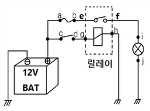
- 휴즈 단선
- 릴레이 고장
- h와 접지선 단선
- j와 접지선 단선
(정답률: 47%)
75. 광도가 25000cd의 전조등으로부터 5m 떨어진 위치에서의 조도(lx)은?
- 100
- 500
- 1000
- 5000
(정답률: 43%)
76. 전기회로의 점검방법으로 틀린 것은?
- 전류 측정 시 회로와 병렬로 연결한다.
- 회로가 접속 불량일 경우 전압 강하를 점검한다.
- 회로의 단선 시 회로의 저항 측정을 통해서 점검할 수 있다.
- 제어모듈 회로 점검 시 디지털 멀티미터를 사용해서 점검할 수 있다.
(정답률: 55%)
77. 냉·난방장치에서 블로워 모터 및 레지스터에 대한 설명으로 옳은 것은?
- 최고 속도에서 모터와 레지스터는 병렬 연결된다.
- 블로워 모터 회전속도는 레지스터의 저항값에 반비례한다.
- 블로워 모터 레지스터는 라디에이터 팬 앞쪽에 장착되어 있다.
- 블로워 모터가 최고속도로 작동하면 블로워 모터 퓨즈가 단선될 수도 있다.
(정답률: 48%)
78. 점화장치의 파워 트랜지스터 불량 시 발생하는 고장 현상이 아닌 것은?
- 주행 중 엔진이 정지한다.
- 공전 시 엔진이 정지한다.
- 엔진 크랭킹이 되지 않는다.
- 점화 불량으로 시동이 안 걸린다.
(정답률: 57%)
79. 자동차 PIC 시스템의 주요 기능으로 가장 거리가 먼 것은?
- 스마트키 인증에 의한 도어 록
- 스마트키 인증에 의한 엔진 정지
- 스마트키 인증에 의한 도어 언록
- 스마트키 인증에 의한 트렁크 언록
(정답률: 67%)
80. 반도체 접합 중 이중접합의 적용으로 틀린 것은?
- 서미스터
- 발광 다이오드
- PNP 트랜지스터
- NPN 트랜지스터
(정답률: 50%)